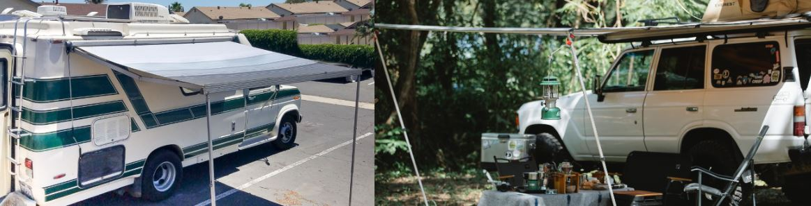

How to fix a leaking rv roof?
Knowing how to fix your own rv roof is a good skill to have.
Also, leaking rv roofs can be dangerous to the interior of your home on wheels. A leaking rv roof is a pain. Most leaks happen around where the rv roof frame attaches to the body of your rig. This can even damage items you have in your rv.
Why do these rooks leak?
Rv roofs usually leak because of some sort of physical damage. However, leaking rv roofs can also be the result of poor rv roof design or shoddy workmanship during its manufacture. As leaking rv roofs are most commonly caused by physical damage, this will be the main focus here.
Here are the steps you need to take to repair an aluminum or plastic rv roof:
- Make sure you have the right roof leaking materials before it starts to rain. You can buy these materials from your local rv dealer or online store. Avoid any use of plastic parts that are not recommended by experts, if you are a novice at this work. Safety first! Remove all personal items and furniture inside the rv, or cover them all up.
- Clean the area you are going to repair with some type of solvent.
- Apply the sealing, calking or coating agent to the location and let it dry/cure.
- Do not wait till it rains again, to do these repairs! Try to fix them before it starts pouring and you are stuck inside your rv wondering what to do next.
The main reasons leaking rv roofs happen:
- A dent in your rv's roof
- Separation
- Aging of the roof
- Rv ladder being used incorrectly
- Someone standing in a weak spot on the roof
- Sun Damage
- Storms/Weather
- Heavy rv awnings
- Poorly constructed roof
Here i'll go over the different things that cause your rv roof to leak in more detail.
- Dents in your rv's roof
- Separation
- Sun Damage
- Heavy rv awnings 
- Storm
- Poorly Constructed Roof
this is pretty self explanatory; if there is a dent in the roof of your camper, then you will most likely leaking will follow. Dents can be caused by a number of things such as overloading the roof. You'll be surprised how much weight you can put on an rv roof before it gives way. You would think that a dent in your rv's top will fix itself over time but this is not the case and no matter what some people might say or tell you, they are just wrong.
separation on an rv roof can be caused by a number of things. The main cause of separation is usually moisture. If the moisture gets behind your rv's top it can start to decompose the glue that is holding everything together and will ultimately lead to leaking. Thickness of the membrane also plays a part in separation; if you have a very thin roof then it is highly likely that this might happen sooner or later; how soon depends on where you usually park and what type of elements it is open to.
The sun can play a big role in damaging your rv's roof too. It can fade and discolor your roof substantially. Not only does it make the rv look bad, it also shows you where leaks are forming because you can usually see where the sun has done the most damage. It is important to take care of these leaks right away or they will become bigger issues in no time!
Rv awnings that are too heavy can play a role in damaging your rv's roof. Awnings are usually installed close to then outside seam of an rv and if they are too heavy they can help speed up separation.
Storms can damage your roof badly. This can happen due to strong wind which can cause tree branches to fall on your rv. New rvs are advertised as being able to withstand a storm with little or no damage. Unfortunately, this isn't always true. Depending on the type and strength of the storm, a new rv can still be damaged.
A poorly constructed roof can allow water to seep in. There may be an area leaking that is hard to spot or the roof may even be leaking in places where it seems unlikely to leak.
Terms you should know | Sealing, Coating, and Calking
There are many different ways to seal your rv's roof. Here i will go over the different methods of completing the job.
What is sealing?
Sealing is the process of coating a surface with a material that won't allow air, moisture or materials to pass through it. It is used on leaking rv roofs but can also be used in your home project - sealing windows can save you money in heating and cooling costs. There are many different types of sealants available depending on the job at hand.
What is sealing good for?Sealing is good for many things. Below i will list some of the uses of sealing.
- Sealing keeps out moisture, dirt, dust, and many others.
- Used to protect surfaces as a coat.
- Helps improve the appearance of a surface
- Used to join certain surfaces
- Helps to contain gas or liquid.
Which industries are sealants used?
Sealants are used in almost all the different types of industries.
They are used in:- Appliances
- The industrial industry
- Aerospace industry
- Electronics industry
- Construction
- Recreational
What is calking?
Calking is the process of making an area watertight. Repairing a leaking rv roofs is a good example for calking. This is the process used by carpenters to seal small cracks and leaking around windows and doors in homes. It can be messy at times, but it keeps the rain out of your home during storms. Calking gives you the time needed to look for your leaking rv roof leak to attempt repairs.
What is coating?
Coating is the process of applying a substance to another surface for protection. This is often done with exterior trim and doors. Coating means you have time to look around your rv looking for leaks, before it rains again.
Conclusion
You just learned all you need to know about a leaking rv roof. The most likely cause of your RV’s leak is going to be the sealant that was put on at manufacture or installation, which has failed and needs replacing with a new one. If this doesn't solve the problem then it could be caused by cracks in the fiberglass materials underlayment. We can help you determine what's causing the leaks for free! Send us an email.